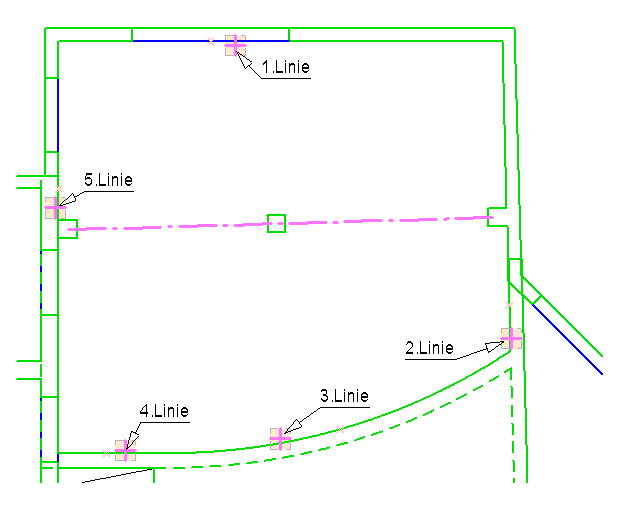
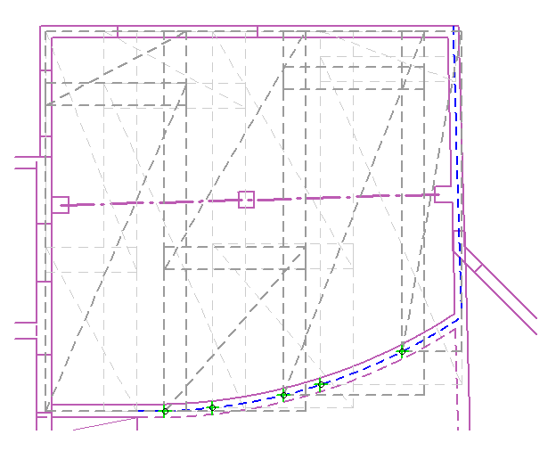
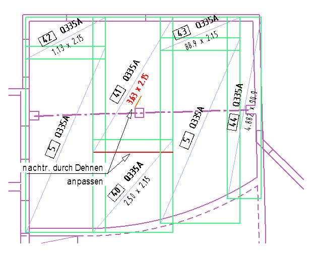

")
")
Der Verlegebereich ist durch Linien und/oder Teilkreise begrenzt. An schrägen Linien und an Kreisbögen werden die Matten automatisch treppenförmig angepasst.
1.Verlegung einrichten (optional)
Die für die Mattenverlegung im Polygon verwendeten Werte werden auf den Schaltflächen für die Matteneinstellung angezeigt und als Vorgabewerte in den Abfragen verwendet.
(Werte in Eingabeeinheiten → Statusleiste).
§Um die voreingestellten Werte zu ändern:
Klicken Sie auf die entsprechende Schaltfläche und geben Sie den jeweiligen Wert im Dialog Matteneinstellungen ein.
|
Aktueller Mattentyp. |
|
Längsüberdeckung (in Tragrichtung). |
|
Querüberdeckung. |
|
Auflagerbreite (Abstand). Wird erst übernommen, wenn die Funktion Verleg erneut aufgerufen wird. |
|
Drehwinkel. |


|


§Klicken Sie im Dialog Matteneinstellungen auf OK.
Die aktuellen Einstellungen werden auf den Schaltflächen für die Matteneinstellungen angezeigt und als Vorschlagswerte in der Eingabezeile verwendet. Die Vorgabewerte können über die Schaltflächen im Funktionsbereich jederzeit bis zum Bestätigen der Abfrage [Wenn OK Enter] geändert werden.
2.Auflager definieren
§Geben Sie die Auflagertiefe bzw. den Abstand von der Außenkante ein und bestätigen Sie mit der Eingabetaste. [Abstand].
§Führen Sie einen der folgenden Schritte aus. [Elemente wählen (Umrissgeometrie)].
a)Manuell §Klicken Sie Linien und Teilkreise der Reihe nach auf der Seite an, zu der der Abstand berücksichtigt werden soll. Mit Rechtsklick können Sie einen anderen Abstand eingeben. §Schließen Sie das Polygon mit einem Klick auf Polygon schließen. §Klicken Sie auf Weiter. b)Automatisch §Klicken Sie in das Polygon. Achten Sie darauf, dass das Polygon geschlossen ist. |
Die Matten werden über die Linien und Kreisbögen hinaus gelegt.
Über die Schaltflächen Win… und Vert1 bis Vert5 können Sie die Einteilung der Matten variieren. Zu jedem Verlegevorschlag wird rechts das zugehörige Gewicht angezeigt.
§Wenn die Einstellungen Ihren Anforderungen entsprechen, bestätigen Sie mit der Eingabetaste. [Wenn OK Enter].
Beispiel:
§Klicken Sie die Linien in der gezeigten Reihenfolge an. Auf welcher Seite der Cursor beim Anklicken liegt, ist nicht von Bedeutung.
 |
§Ändern Sie die Verteilungsrichtung auf Vert.3.
§Um die Neigung der Diagonalen zu ändern, klicken Sie im Funktionsbereich auf 2.Lage.
 |
§Klicken Sie auf  , um die Matten zu zeichnen.
, um die Matten zu zeichnen.
 |
Die Mattenabmessungen können über die Funktion [Matten | Dehnen] geändert werden.
Siehe auch:
Zugehörige Referenzen: